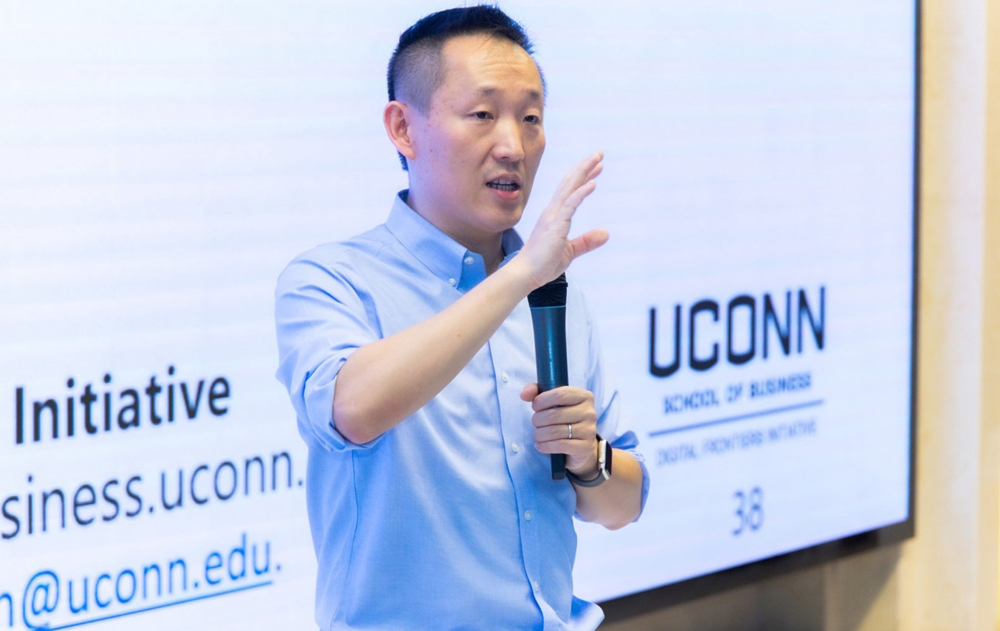

About Wei Chen
Wei Chen is an Associate Professor of Operations and Information Management at the University of Connecticut School of Business. After serving for the past three years as Academic Director of the UConn Digital Frontiers Initiative, he is serving in 2026 as Director of AI Transformation at the UConn School of Business.
His research examines how organizations design and govern generative AI capabilities to transform decision-making, knowledge work, and operations. His work has appeared in leading journals including Management Science, Information Systems Research, MIS Quarterly, and Production and Operations Management. He has received multiple best paper awards and nominations, as well as the Sandra A. Slaughter Early Career Award and the Gordon B. Davis Young Scholar Award from the INFORMS Information Systems Society.
His current work spans two book-centered platforms: The T-W-O Project, which hosts The Owner, a business novel about work in the GenAI era, and GenAI4All.org, which supports the textbook Generative AI for Business: Frameworks, Techniques, and Governance and related teaching materials. His earlier research explored platforms, crowds, and financial technologies.
Prior to joining UConn in 2023, Wei was a tenured faculty member at the MIS department, Eller College of Management, University of Arizona. He received his PhD in Innovation, Technology and Operations from the Rady School of Management, University of California, San Diego.
